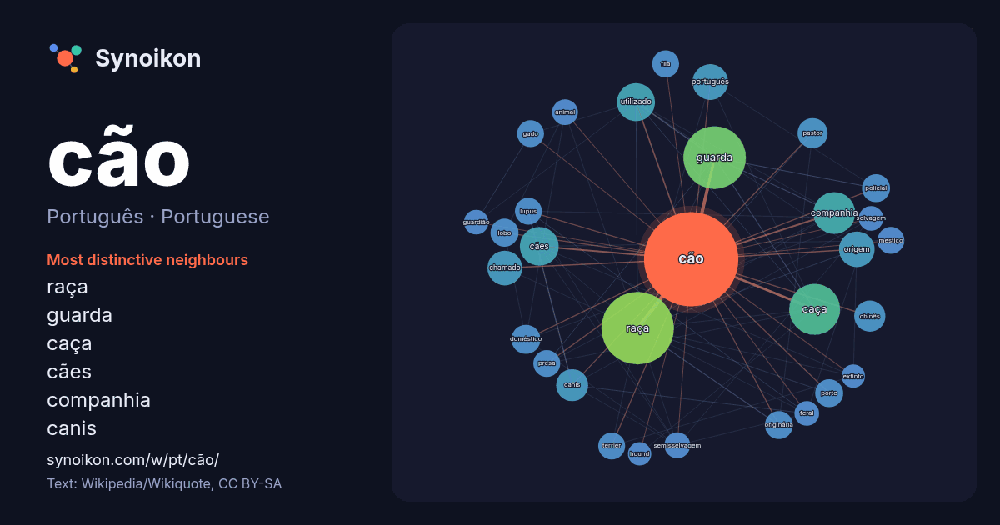

Português · Portuguese · popular word
cão
“dog” · The words found around it in 964 instances from Portuguese Wikipedia, Wikiquote.

Most distinctive neighbours
- raça 70×
- guarda 53×
- caça 38×
- cães 24×
- companhia 19×
- canis 18×
- utilizado 18×
- chinês 14×
- doméstico 14×
- pastor 14×
- originária 13×
- lupus 13×
- mestiço 13×
- terrier 13×
- fila 13×
- porte 12×
- lobo 12×
- policial 12×
- semisselvagem 12×
- gado 12×
× = how many times more often than in general Portuguese Wikipedia text.
Most frequent neighbours
- raça 87
- guarda 65
- caça 43
- companhia 29
- cães 25
- utilizado 24
- mundo 22
- origem 21
- português 21
- chamado 20
- canis 17
- portugal 17
- chinês 16
- pastor 15
- considerado 14
- doméstico 14
- lobo 13
- originária 13
- pequeno 13
- policial 13
In context
- artigo. Para outros significados, veja Cachorro (desambiguação) ou Cão (desambiguação). Cão (nome científico: Canis lupus familiaris), no Brasil também chamado Wikipedia snippets · Cão
- possessivo. Assim como todo cão de luxo, como são chamados estes animais de companhia, o chihuahua não é propriamente um cão de caça, embora seja bem visto Wikipedia snippets · Chihuahua (cão)
- Itália. É valorizada no país nativo como cão de guarda de fazendas e cão de caça de javalis. Hoje é um notável cão de companhia. Sua origem, bem como a de Wikipedia snippets · Cane corso
- como cão de guarda e companhia. A origem deste canino está atrelada à colonização do Brasil, quando os europeus trouxeram para cá os seus cães de trabalho Wikipedia snippets · Fila-brasileiro
- é um cão de fazenda de origem ancestral que, nos pré-Alpes de Berna e campos do centro do respectivo cantão era utilizado como cão de guarda, cão de tração Wikipedia snippets · Boiadeiro de Berna
- O cão de água português, cão d'água português ou cão d'água algarvio (como é conhecido em Portugal) é uma raça de cães criada originária do Algarve, em Wikipedia snippets · Cão de água português
- … s da raça American staffordshire terrier (Amstaff) e nesta época iniciou sua criação de Amstaffs utilizando como base o cão Blue maxx, a Wikipedia snippets · American Bully
- Lundehund—foram utilizados na Escandinávia para caçar aves e pequenos mamíferos. O Cão finlandês da Lapônia, Lapphund e o Pastor-finlandês-da-lapônia foram usados Wikipedia snippets · Spitz (cão)
More Portuguese words
- arte
- ciência
- clima
- comida
- coração
- deus
- dinheiro
- família
- força
- gato
- história
- língua
- morte
- natureza
- ouro
- ponte
- saúde
- trabalho
- trem
- verdade
- vida
- água
Precomputed on 2026-10-09 with default settings (±5 words, medium corpus). The interactive map can refresh it with live data.